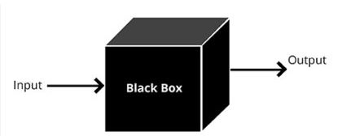

Brief and applicable#
For Supervised Input (x), Output(y)
Example: In credit scoring, the input features might include:
x1: Agex2: Incomex3: Credit history
Outputs (y): Credit score (numeric)
Dataset Example:#
Age (x1) |
Income (x2) |
Credit History (x3) |
Credit Score (y) |
|---|---|---|---|
25 |
50,000 |
700 |
750 |
40 |
80,000 |
680 |
720 |
30 |
60,000 |
650 |
680 |
50 |
100,000 |
720 |
780 |
For UnSupervised Example: Market Basket Analysis which products are frequently bought together
Inputs (x):#
Each transaction consists of a list of products purchased together.
Dataset Example:#
Transaction ID |
Products Purchased |
|---|---|
Trans1 |
Bread, Butter, Milk |
Trans2 |
Bread, Butter |
Trans3 |
Milk, Diapers, Beer, Eggs |
Trans4 |
Bread, Milk, Diapers, Beer |
Trans5 |
Bread, Milk, Diapers, Butter |
Convert it to a numeric format for computer processing.
Transaction ID |
Bread |
Butter |
Milk |
Diapers |
Beer |
|---|---|---|---|---|---|
Trans1 |
1 |
1 |
1 |
0 |
0 |
Trans2 |
1 |
1 |
0 |
0 |
0 |
Trans3 |
0 |
0 |
1 |
1 |
1 |
Trans4 |
1 |
0 |
1 |
1 |
1 |
Trans5 |
1 |
1 |
1 |
1 |
0 |
import pandas as pd
from sklearn.cluster import KMeans
# Create the dataset with additional transactions
data = {
'Transaction ID': ['Trans1', 'Trans2', 'Trans3', 'Trans4', 'Trans5', 'Trans6', 'Trans7', 'Trans8', 'Trans9', 'Trans10'],
'Bread': [1, 1, 0, 1, 1, 0, 1, 1, 0, 0],
'Butter': [1, 1, 0, 0, 1, 1, 0, 1, 1, 0],
'Milk': [1, 0, 1, 1, 1, 0, 1, 1, 0, 1],
'Diapers': [0, 0, 1, 1, 1, 1, 1, 0, 1, 0],
'Beer': [0, 0, 1, 1, 0, 0, 0, 1, 1, 1]
}
# Create DataFrame
df = pd.DataFrame(data)
df.set_index('Transaction ID', inplace=True)
print("Original Data:")
print(df)
# Apply K-Means Clustering
k = 3 # Number of clusters
kmeans = KMeans(n_clusters=k, random_state=0)
df['Cluster'] = kmeans.fit_predict(df)
print("\nData with Clusters:")
print(df)
Original Data:
Bread Butter Milk Diapers Beer
Transaction ID
Trans1 1 1 1 0 0
Trans2 1 1 0 0 0
Trans3 0 0 1 1 1
Trans4 1 0 1 1 1
Trans5 1 1 1 1 0
Trans6 0 1 0 1 0
Trans7 1 0 1 1 0
Trans8 1 1 1 0 1
Trans9 0 1 0 1 1
Trans10 0 0 1 0 1
Data with Clusters:
Bread Butter Milk Diapers Beer Cluster
Transaction ID
Trans1 1 1 1 0 0 2
Trans2 1 1 0 0 0 0
Trans3 0 0 1 1 1 1
Trans4 1 0 1 1 1 1
Trans5 1 1 1 1 0 1
Trans6 0 1 0 1 0 0
Trans7 1 0 1 1 0 1
Trans8 1 1 1 0 1 2
Trans9 0 1 0 1 1 0
Trans10 0 0 1 0 1 2
Simple Word2Vec Example with Gensim#
Word2Vec is a deep learning algorithm that generates vector representations of words by training on a large corpus of text, capturing semantic similarities based on the context in which words appear. Word2Vec is a powerful feature extractor for natural language processing tasks
For the Persian language, you can read this site. It explains word2vec in Farsi.
Example Sentence:#
“In nature, flowers bloom beautifully, adding color and joy to the peaceful surroundings of the outdoors.”
Sliding Window Size: 3#
We will extract examples where each target word is predicted based on its surrounding context words.
Training Data Table#
Target Word |
Context Words (Input) |
Example Input ( |
Example Output ( |
|---|---|---|---|
flowers |
In, nature |
[“In”, “nature”] |
flowers |
flowers |
nature, bloom |
[“nature”, “bloom”] |
flowers |
bloom |
nature, flowers |
[“nature”, “flowers”] |
bloom |
bloom |
flowers, beautifully |
[“flowers”, “beautifully”] |
bloom |
beautifully |
flowers, bloom |
[“flowers”, “bloom”] |
beautifully |
beautifully |
bloom, adding |
[“bloom”, “adding”] |
beautifully |
adding |
bloom, beautifully |
[“bloom”, “beautifully”] |
adding |
adding |
beautifully, color |
[“beautifully”, “color”] |
adding |
color |
beautifully, adding |
[“beautifully”, “adding”] |
color |
color |
adding, and |
[“adding”, “and”] |
color |
and |
adding, color |
[“adding”, “color”] |
and |
and |
color, joy |
[“color”, “joy”] |
and |
joy |
color, and |
[“color”, “and”] |
joy |
joy |
and, to |
[“and”, “to”] |
joy |
to |
and, joy |
[“and”, “joy”] |
to |
to |
joy, the |
[“joy”, “the”] |
to |
the |
joy, to |
[“joy”, “to”] |
the |
the |
to, peaceful |
[“to”, “peaceful”] |
the |
peaceful |
to, the |
[“to”, “the”] |
peaceful |
peaceful |
the, surroundings |
[“the”, “surroundings”] |
peaceful |
surroundings |
the, peaceful |
[“the”, “peaceful”] |
surroundings |
surroundings |
peaceful, of |
[“peaceful”, “of”] |
surroundings |
of |
peaceful, surroundings |
[“peaceful”, “surroundings”] |
of |
of |
surroundings, the |
[“surroundings”, “the”] |
of |
the |
surroundings, of |
[“surroundings”, “of”] |
the |
the |
of, outdoors |
[“of”, “outdoors”] |
the |
outdoors |
of, the |
[“of”, “the”] |
outdoors |
The input and output are fed into the model, and after the model is trained, the ‘black box’ can predict words related to the input word.

Computer vision#
Computer Vision allows computers to “see” and understand images or videos. It involves techniques that enable machines to process, analyze, and make sense of visual data.
Image Processing#
We started with image processing by looking at examples of digit recognition. First, what is a digit from the perspective of a camera? As shown below, each image we see is in the form of a matrix that affects the cells in our eyes. Similarly, a camera functions like an eye. The output of the camera is a matrix that looks as follows:
import numpy as np
import matplotlib.pyplot as plt
from sklearn.datasets import fetch_openml
# Load the MNIST dataset using scikit-learn
mnist = fetch_openml('mnist_784', version=1)
images = mnist.data.to_numpy().reshape(-1, 28, 28)
labels = mnist.target.astype(int).to_numpy()
# Print the shapes of the datasets
print(f"Data shape: {images.shape}")
print(f"Labels shape: {labels.shape}")
print(f"Shape of a single image: {images[0].shape}")
# Function to display a small part of the image and its pixel matrix
def display_digit_and_matrix(image, label, top_left, size):
# Extract the small part of the image
top, left = top_left
bottom = top + size
right = left + size
small_part = image[top:bottom, left:right]
plt.figure(figsize=(12, 6))
# Display the original image
plt.subplot(1, 2, 1)
plt.imshow(image, cmap='gray')
plt.title(f"Digit: {label}")
plt.axis('off')
# Display the small part of the image
plt.subplot(1, 2, 2)
plt.imshow(small_part, cmap='gray', vmin=0, vmax=255)
plt.title(f"Pixel Matrix ({size}x{size})")
plt.axis('off')
# Print pixel values of the small part
print("Pixel values of the small part:")
print(small_part)
plt.show()
# Define parameters for the small part of the image
top_left = (10, 10) # Top-left corner of the small part
size = 10 # Size of the small part (10x10)
# Display the first image in the dataset with a small part
display_digit_and_matrix(images[0], labels[0], top_left, size)
Data shape: (70000, 28, 28)
Labels shape: (70000,)
Shape of a single image: (28, 28)
Pixel values of the small part:
[[ 1 154 253 90 0 0 0 0 0 0]
[ 0 139 253 190 2 0 0 0 0 0]
[ 0 11 190 253 70 0 0 0 0 0]
[ 0 0 35 241 225 160 108 1 0 0]
[ 0 0 0 81 240 253 253 119 25 0]
[ 0 0 0 0 45 186 253 253 150 27]
[ 0 0 0 0 0 16 93 252 253 187]
[ 0 0 0 0 0 0 0 249 253 249]
[ 0 0 0 0 46 130 183 253 253 207]
[ 0 0 39 148 229 253 253 253 250 182]]
We have 70,000 digit images, each of which is 28x28 pixels. We directly feed them to the learning module.
import numpy as np
import matplotlib.pyplot as plt
from sklearn.datasets import fetch_openml
from sklearn.naive_bayes import GaussianNB
from sklearn.model_selection import train_test_split
from sklearn.metrics import accuracy_score, confusion_matrix, ConfusionMatrixDisplay
# Load the MNIST dataset
mnist = fetch_openml('mnist_784', version=1)
images = mnist.data
labels = mnist.target.astype(int)
# Split the dataset into training and testing sets
X_train, X_test, y_train, y_test = train_test_split(images, labels, test_size=0.2, random_state=42)
# Initialize the Gaussian Naive Bayes classifier
gnb = GaussianNB()
# Train the classifier
gnb.fit(X_train, y_train)
# Predict on the test set
y_pred = gnb.predict(X_test)
# Compute accuracy
accuracy = accuracy_score(y_test, y_pred)
print(f"Accuracy: {accuracy:.2f}")
# Compute confusion matrix
conf_matrix = confusion_matrix(y_test, y_pred)
# Display confusion matrix
disp = ConfusionMatrixDisplay(confusion_matrix=conf_matrix, display_labels=gnb.classes_)
disp.plot(cmap=plt.cm.Blues)
plt.title('Confusion Matrix for MNIST Digit Recognition using Gaussian Naive Bayes')
plt.show()
Accuracy: 0.55
We see an accuracy of 0.55, or an error rate of 45%. This is a problem we must address by selecting suitable features and a machine learning model that yields better results.
With a change of model, we obtained 76% accuracy.
import numpy as np
import matplotlib.pyplot as plt
from sklearn.datasets import fetch_openml
from sklearn.model_selection import train_test_split
from sklearn.decomposition import PCA
from sklearn.linear_model import SGDClassifier
from sklearn.metrics import accuracy_score, confusion_matrix, ConfusionMatrixDisplay
# Load the MNIST dataset
mnist = fetch_openml('mnist_784', version=1)
images = mnist.data
labels = mnist.target.astype(int)
# Split the dataset into training and testing sets
X_train, X_test, y_train, y_test = train_test_split(images, labels, test_size=0.2, random_state=42)
# Apply PCA for feature extraction
pca = PCA(n_components=10) # Reduce to 10 components for faster computation
X_train_pca = pca.fit_transform(X_train)
X_test_pca = pca.transform(X_test)
# Initialize the SGDClassifier
sgd = SGDClassifier(max_iter=1000, tol=1e-3, random_state=42)
# Train the classifier
sgd.fit(X_train_pca, y_train)
# Predict on the test set
y_pred = sgd.predict(X_test_pca)
# Compute accuracy
accuracy = accuracy_score(y_test, y_pred)
print(f"Accuracy: {accuracy:.2f}")
# Compute confusion matrix
conf_matrix = confusion_matrix(y_test, y_pred)
# Display confusion matrix
disp = ConfusionMatrixDisplay(confusion_matrix=conf_matrix, display_labels=sgd.classes_)
disp.plot(cmap=plt.cm.Blues)
plt.title('Confusion Matrix for MNIST Digit Recognition using SGD with PCA')
plt.show()
Accuracy: 0.76